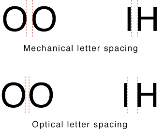
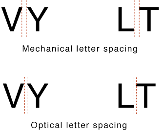
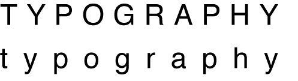
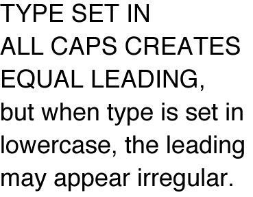
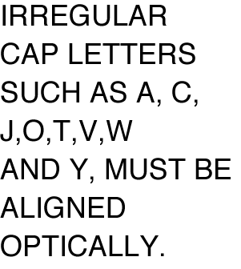

Less space is required between circular letters than vertical ones

Some combinations defy simple solutions

Capital letters are more frequently letterspaced then lowercase letters

linespacing may need adjusting

good vertical alignment can be challenging
